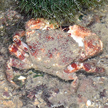

|
|
| crabs text index | photo index |
| Phylum Arthropoda > Subphylum Crustacea > Class Malacostraca > Order Decapoda > Brachyurans > Family Pilumnidae |
| Fuzzy reef crab Pilumnus sluiteri Family Pilumnidae updated Dec 2019 Where seen? This reddish crabs with a fuzzy growth is sometimes seen on good reefy shores in the South. Features: Body width 3-5cm. Body oval, body and legs covered with sparse fuzz. Walking legs quite long, sparsely fuzzy. It has stout pincers, with black tips. Eyes bright red. Sometimes mistaken for the Ferocious reef crab which is found in the same habitat and also also has red eyes but is not fuzzy. |
 Raffles Lighthouse, Jul 06 |
| Fuzzy reef crabs on Singapore shores |
On wildsingapore
flickr
|
| Other sightings on Singapore shores |
 Kusu Island, Dec 19 Photo shared by Loh Kok Sheng on facebook. |
| Acknowledgement Grateful thanks to Ondrej Radosta for checking with Prof Peter Ng of the Lee Kong Chian Natural History Museum for the identity of this crab. |